Before you start
Tsek is a paper workflow. The better the paper, the fewer sheets you have to correct by hand — so set these up once, properly.
What you need
- A printer that can print at 100% / actual size.
- Plain white paper, in the size you choose in Setup.
- A scanner, or a phone camera that makes PDF, JPG, or PNG files.
- Tsek installed on Windows, or open in a browser.
Three habits that save time
- Finish the structure and key before printing anything.
- Print at 100% — "Fit to page" shrinks the corner marks.
- Back up the workspace before wiping app data or moving machines.
How this guide works
Each numbered chapter follows one tab, in the order you would normally use them. The circled number on the left matches the step, not the tab count.
- Figures 1–19 are real screenshots. On screen, click one to open it full size.
- Rust boxes are notes about how Tsek behaves. Green boxes are shortcuts and tips. Red boxes are warnings that can cost you a scan or a score.
- Numbers in the text come from the demo class, so you can compare them with your own screen at each step.
Open the workspace
The home screen answers one question before you open anything: how far along is each class?
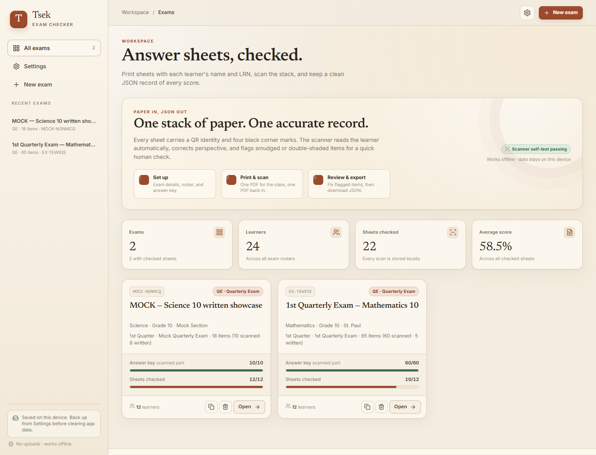
- Open Tsek. All exams is selected in the left rail.
- Read the four tiles: Exams, Learners, Sheets checked, and Average score. They cover every exam in the workspace, not just one.
- Check each exam card. Answer key scanned part tells you whether a key is complete; Sheets checked tells you how much of the class has been scanned.
- Use Open on a card to enter the exam, or New exam to start a fresh class.
In the demo, the MOCK exam has a complete key and 12 of 12 sheets checked. The Mathematics exam is still at 10 of 12, which is the more realistic state on a normal school day.
Create the exam and fill in the details
The words on this screen are printed on every answer sheet and carried into every export. It is worth three minutes to get them right.
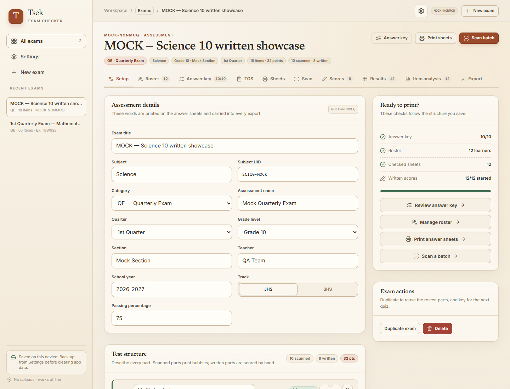
- Choose New exam, then pick a category: Written Works, Performance Task, or Quarterly Exam. The category decides which weight the GradeApp applies later, so it matters even if the test itself looks the same.
- Fill Exam title, Subject, and Subject UID. The UID is the short code the GradeApp uses to match the subject; keep it consistent across quarters.
- Set Category, Assessment name, Quarter, Grade level, Section, Teacher, School year, and Track (JHS or SHS).
- Set Passing percentage. The default is 75; this drives the passing count and the grade check in Results.
- Watch the Ready to print? panel. Each line turns into a check as that piece is finished: key, roster, checked sheets, written scores.
- Save changes before leaving the tab. Text edits here do not change the scanned geometry, so correcting a typo does not invalidate papers.
Describe the test structure
A test is a list of named parts. Each part is either scanned from bubbles or scored by hand. This one screen is the source of the printed sheet, the TOS, the score columns, and the analysis.
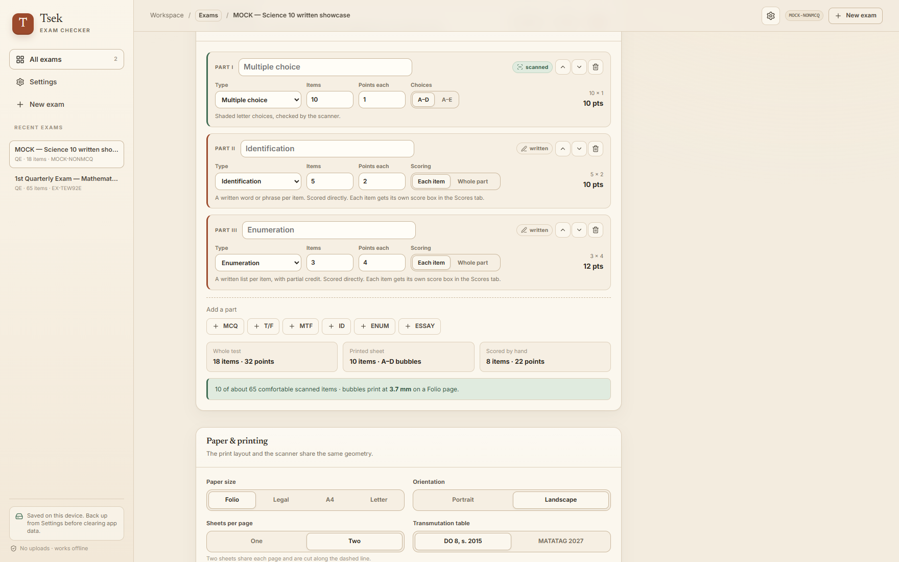
- Under Test structure, name each part and choose its Type. Multiple choice, true/false, and modified true/false are marked scanned; identification, enumeration, and essay are marked written.
- Set Items and Points each. The part total updates immediately; the whole-test total is the sum of every part.
- For a written part, choose how it is scored: Each item gives one score box per item; Whole part gives one box for the entire answer. See step 12 for when to use which.
- Use the add-a-part buttons (MCQ, T/F, MTF, ID, ENUM, ESSAY) to extend the test. Reorder or delete a part with the arrows and bin on its header.
- Read the three summary boxes: Whole test, Printed sheet, and Scored by hand. They are an easy sanity check before printing.
- Set Paper & printing: paper size, orientation, sheets per page, and the transmutation table. The print layout and the scanner share the same geometry.
Import the class roster
The LRN is the learner's identity. Names are printed for the teacher and learner; the QR carries the LRN, and that is what the scanner matches.
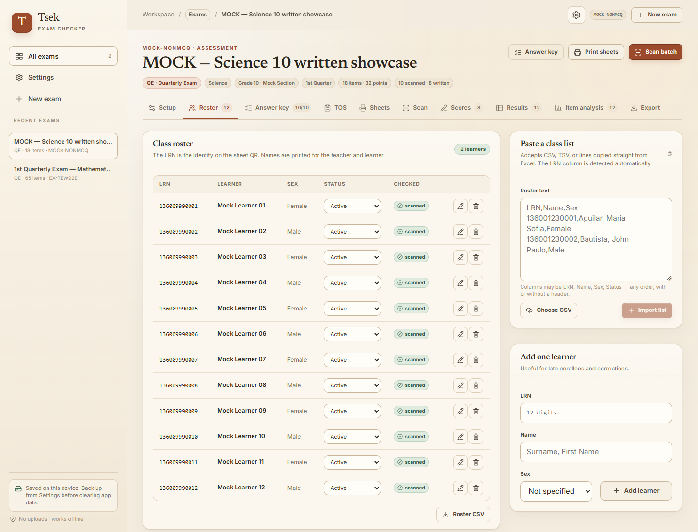
- Open Roster. Paste rows straight from Excel into Roster text, or choose Choose CSV.
- Columns can be LRN, Name, Sex, Status in any order, with or without a header. The LRN column is detected automatically.
- Choose Import list. Existing learners with the same LRN are updated rather than duplicated.
- For a late enrollee, use Add one learner: 12-digit LRN, name as Surname, First Name, and sex.
- Check the Checked column. A green “scanned” badge means at least one paper is matched to that learner; a dash means none yet.
- Use Roster CSV at the bottom for your own records or to hand the list to another teacher.
Set the answer key
Only scanned parts need a key. Written parts are scored per learner later, so Tsek does not pretend there is one right answer.
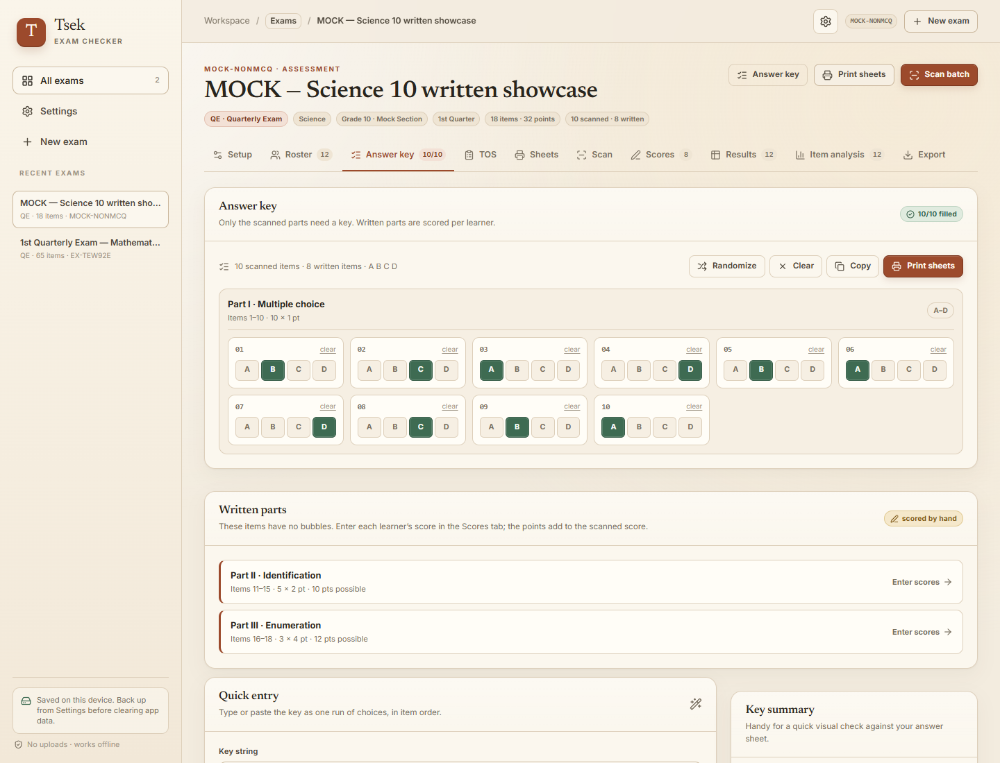
- Open Answer key. Each item shows its choices; the keyed letter is dark green.
- Click a letter to key it, or clear above an item to remove it. Randomize fills a valid key for practice sheets; Clear empties all scanned items.
- For a long test, use Quick entry and type or paste the key as one string, in item order (for example
BCDDDCADDB). - Use Key summary as a fast visual check against your answer sheet before printing.
- Written parts appear below with their item range and points. Choose Enter scores to jump to the Scores tab when the papers are ready.
Build the Table of Specifications
The TOS is the one- or two-page table your school asks for: which competency, which Bloom level, how many items, and where they sit in the test.
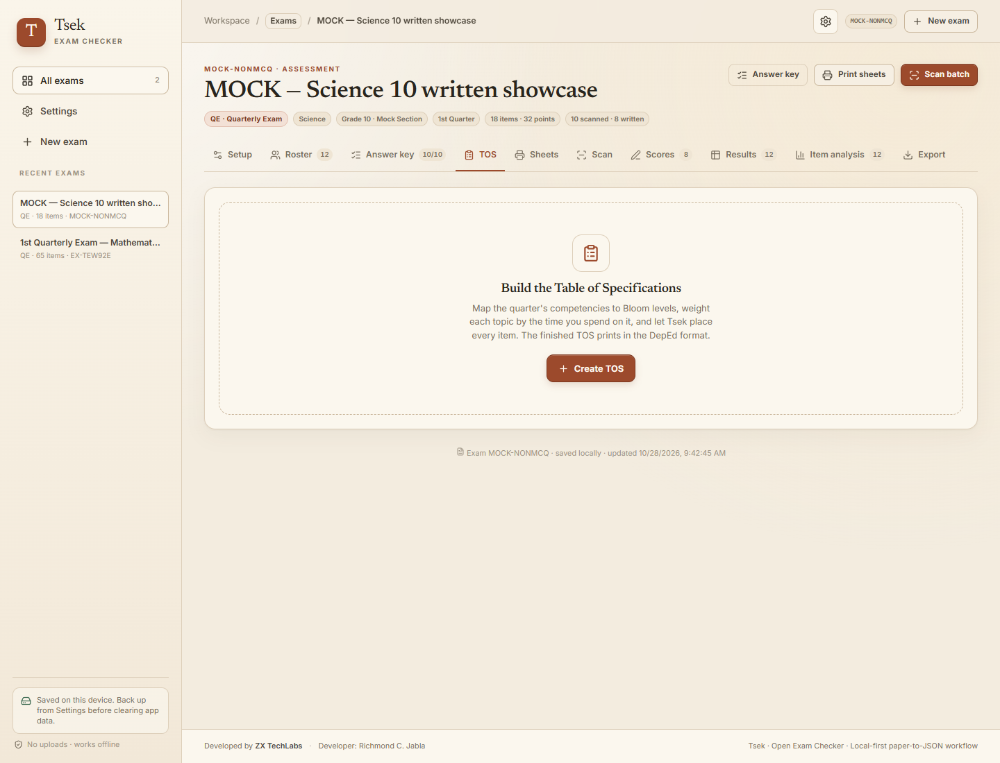
- Open TOS and choose Create TOS.
- Map each quarter competency to a Bloom level and weight it by the time you actually spend on it.
- Tsek places the items using the part structure, so the TOS and the printed sheet cannot disagree about how many items exist.
- Print the finished TOS in the DepEd format from the same tab.
Print the answer sheets
One PDF for the class. Each sheet carries the learner's name and LRN, a QR code, and four black corner marks. The scanner uses all three.
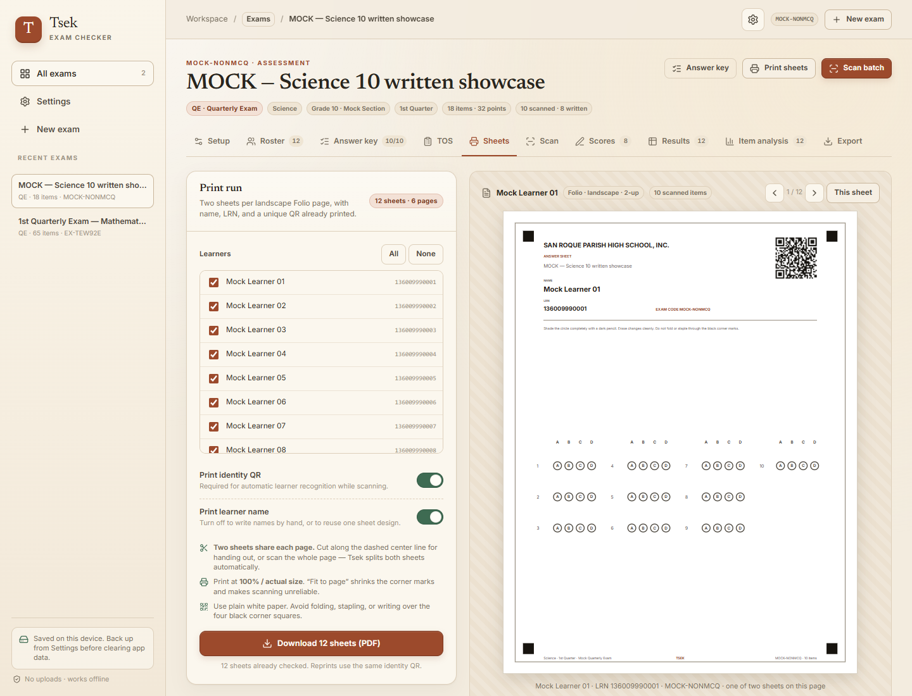
- Open Sheets. Choose the learners with the checkboxes, or use All / None.
- Leave Print identity QR on. It is required for automatic learner recognition. Turn off Print learner name only if you want identical sheets written by hand.
- Choose Download 12 sheets (PDF). The button states the exact sheet and page count.
- In the print dialog, choose 100% / actual size, not “Fit to page”. Use plain white paper.
- With the default two-up layout, two portrait sheets share one landscape Folio page. Cut along the dashed centre line when handing out, or scan the whole page — Tsek splits both halves automatically.
- Check one sheet in the preview with This sheet before printing the stack.
Scan the batch
Drop the scanned PDF or the page photos. Every page is read on this device; nothing is uploaded.
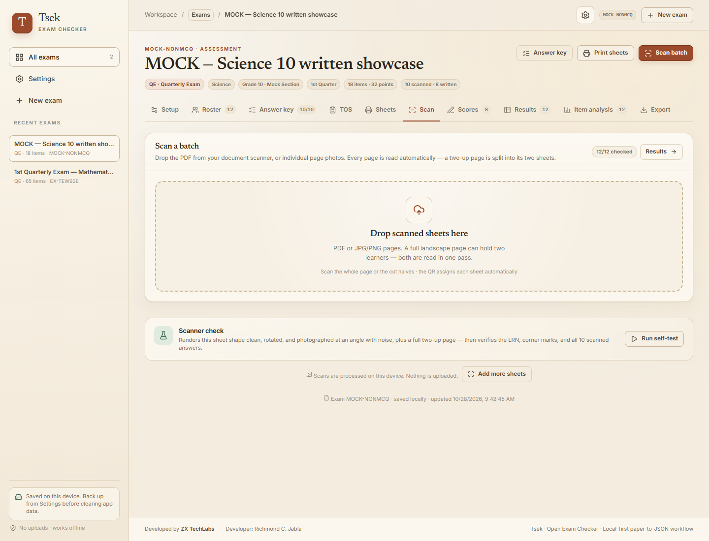
- Open Scan and drop the file into Drop scanned sheets here, or click to choose files.
- A two-up landscape page is split into its two sheets. Cut halves scanned one at a time also work; the QR decides which sheet is which.
- Watch the counter. When it reads 12/12 checked, the whole class has been matched.
- Open Results to work through anything flagged. Faint marks, double shading, and broken corners are held for review instead of being guessed.
- If scans keep failing, run Run self-test. It renders the current sheet clean, rotated, and photographed at an angle, then checks the QR, corner marks, and every answer.
- Use Add more sheets for late papers; new pages merge into the same class.
Enter the written scores
One column per written item, or one column for a pooled part. Each typed score adds directly to the scanned total.
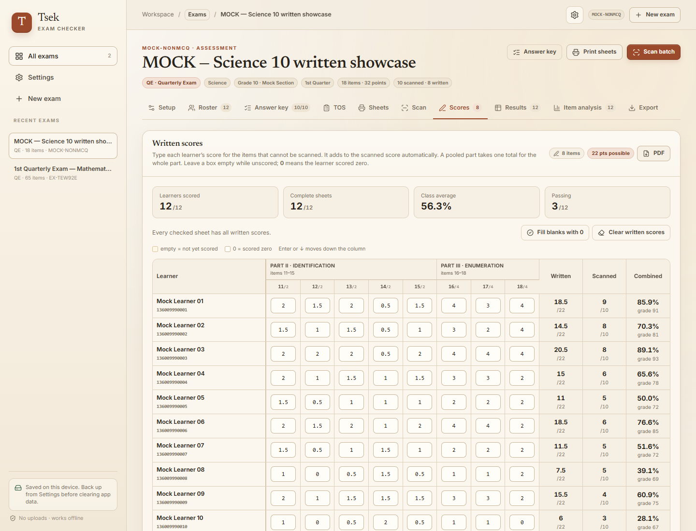
- Open Scores. The header shows 8 items and 22 pts possible — the written half of the test.
- Type a score in each box. Enter or the down arrow moves to the next learner in the same column.
- Leave a box empty when the item is not yet scored. Type 0 when it was scored and earned nothing. The two mean different things, and the totals treat them differently.
- When the stack is finished, use Fill blanks with 0 only if every remaining blank really is a zero. Clear written scores starts the column over.
- Check the four tiles: Learners scored, Complete sheets, Class average, and Passing at the passing percentage from Setup.
- Read the right-hand columns: Written (out of 22), Scanned (out of 10), Combined as a percentage, and the transmuted grade.
Review the results
Results is the class list: one row per learner, with the score breakdown, grade, and review state.
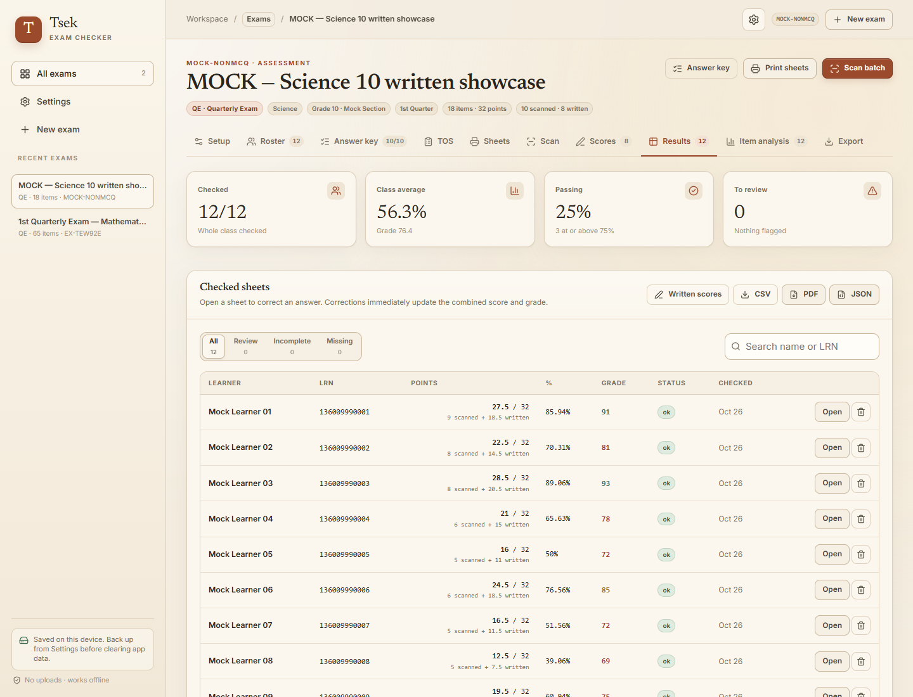
- Check the four tiles: Checked, Class average, Passing, and To review. A complete class shows 12/12 checked and 0 to review.
- Use the filters (All, Review, Incomplete, Missing) or the search box to find a learner by name or LRN.
- Read the points cell: the top number is the total, and the small line underneath splits it, for example 9 scanned + 18.5 written.
- Choose Open to correct one answer. A correction immediately updates the combined score and the transmuted grade.
- Use the header buttons for CSV, PDF, and JSON when you need a file rather than the screen.
Read the item analysis
Item analysis answers a different question from Results. Results says how the class did; analysis says how the test itself behaved — which items worked, which were too easy, and which did not separate strong from weak learners.
Start with the scope
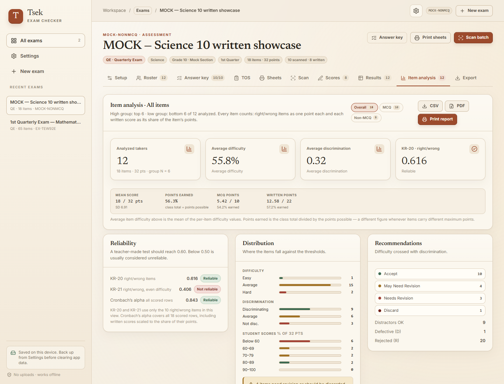
- Open Item analysis. The scope buttons read Overall 18, MCQ 10, and Non-MCQ 8 for this exam.
- Use Overall for the whole test, MCQ for the scanned bubbles only, and Non-MCQ for the handwritten parts only.
- Read the top cards: Analyzed takers (12), Average difficulty (55.8%), Average discrimination (0.32), and the reliability figure.
- Read the score strip: Mean score 18 of 32, Points earned 5.42 of 10 scanned and 12.58 of 22 written. Points earned is the class total divided by the points possible; it is not the same as average item difficulty when items carry different points.
- Use CSV, PDF, or Print report for a file that follows the same scope. An empty scope is skipped, not printed as a blank table.
The MCQ view
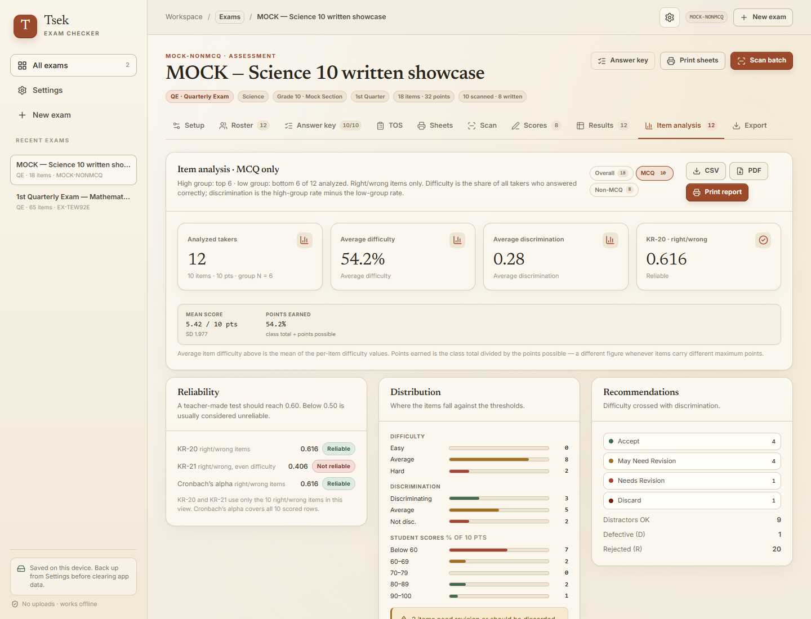
Use this view when you want to judge the multiple-choice items without the handwritten parts pulling the averages around. Difficulty is the share of takers who answered correctly; discrimination is the high-group rate minus the low-group rate; reliability uses KR-20, KR-21, and Cronbach's alpha over right/wrong rows.
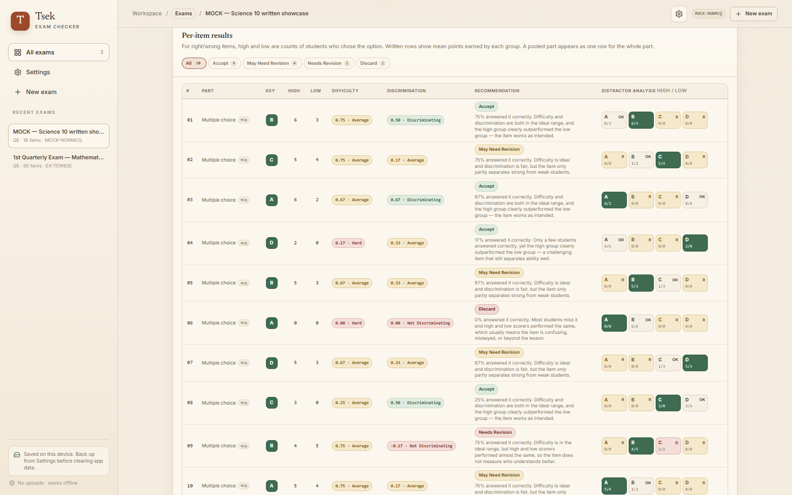
The Non-MCQ view
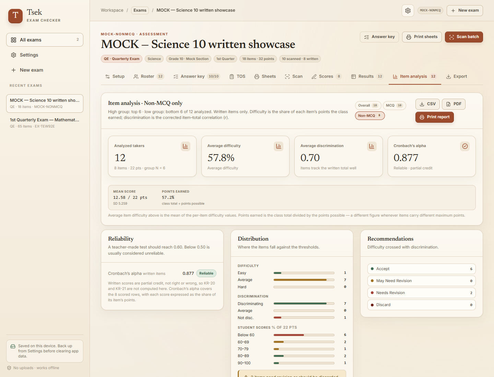
Written items are partial credit, not right or wrong, so KR-20 and KR-21 do not apply. Difficulty here is the share of an item's points the class earned — a learner who scores 1.5 out of 2 earns 75% of that item. Discrimination is the corrected item–total correlation, which asks whether the item moves with the rest of the written score.
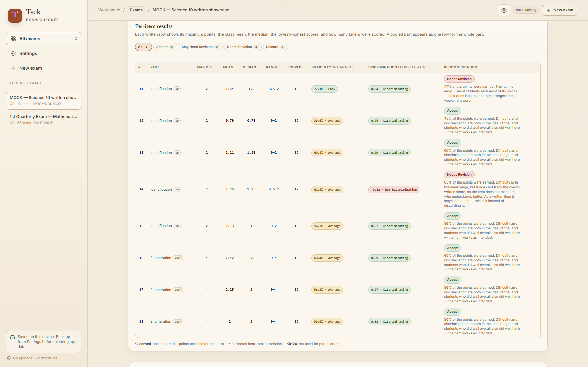
Reliability, distribution, and verdicts
Reliability
A teacher-made test should reach 0.60. Between 0.50 and 0.60 is marginal; below 0.50 is usually considered unreliable. KR-20 and KR-21 use only right/wrong items; Cronbach's alpha also includes written rows, rescaled to each item's points.
Distribution
Two small charts count where the items fall (Easy / Average / Hard, Discriminating / Average / Not Discriminating) and where the learners fall in 10-point score bands. They show whether the problem is a few items or the whole test.
| Difficulty | Discrimination | Verdict | What it means |
|---|---|---|---|
| Average (0.25–0.75) | Discriminating (above 0.40) | Accept | Works as intended; stronger learners did better. |
| Average | Average (0–0.40) | May Need Revision | Usable, but the item only partly tracks overall performance. |
| Average | Not Discriminating (0 or below) | Needs Revision | The item does not measure who understands better. |
| Easy (above 0.75) | Any | Needs Revision | Most learners earn most points, so it separates very little. |
| Hard (below 0.25) | Discriminating or Average | Accept | Hard, but it still separates strong from weak answers. |
| Easy or Hard | Not Discriminating | Discard | Scanned/overall views only. Written items are marked Needs Revision instead. |
Thresholds are fixed across views: difficulty above 0.75 is Easy, below 0.25 is Hard; discrimination above 0.40 is Discriminating, at or below 0 is Not Discriminating. The per-item table can be filtered by verdict, but the aggregates above it always describe the whole scope.
Score a written part as one whole
Some handwritten answers are marked holistically: one essay score, one rubric total, one mark for the whole part. Tsek can do that without losing the items from the TOS or the analysis.
Each item
One score box per item. Best when the items are separate answers and you want per-item difficulty, discrimination, and recommendations.
Whole part
One score box for the entire part, out of the sum of its item points. Best for an essay or a single holistic rubric — while every item still counts in the TOS and analysis.
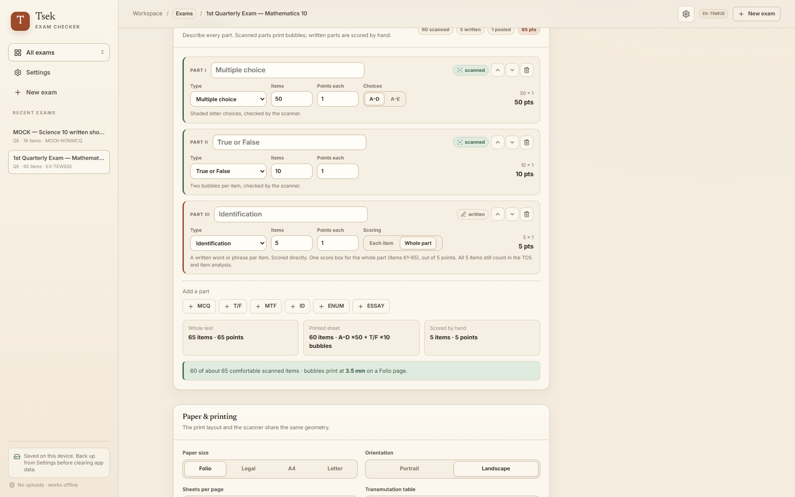
- In Setup, open the written part and choose Whole part under Scoring.
- Read the note under the toggle. It states the item range, the single box's maximum, and that all items still count in the TOS and analysis.
- Save the structure before entering scores, so the Scores tab rebuilds with the pooled column.
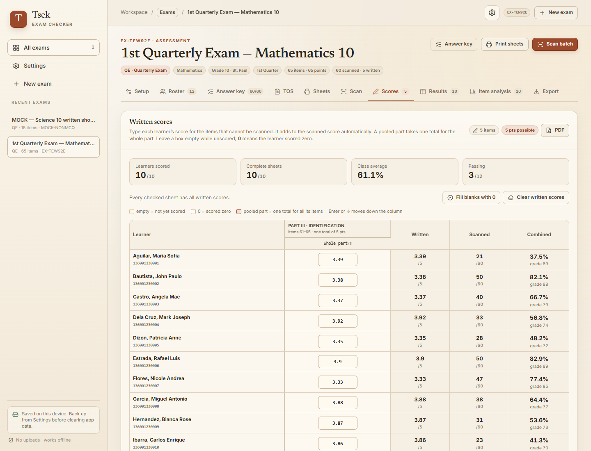
- Open Scores. The pooled part shows one column headed whole part / 5, covering items 61–65.
- Type the single score per learner. The written total, combined percentage, and grade update as usual.
- The items still appear in the TOS and in item analysis; only the score entry is pooled.
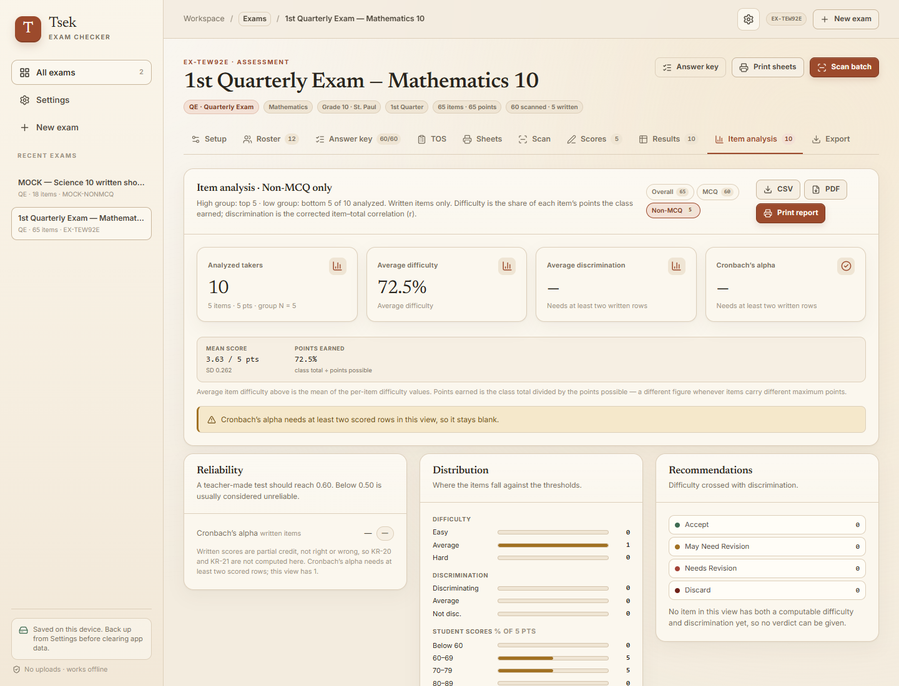
Export the results and back up
Export turns the class into a file for the GradeApp, a spreadsheet, or a full archive. Every export is plain JSON or CSV; nothing leaves the device until you move the file yourself.
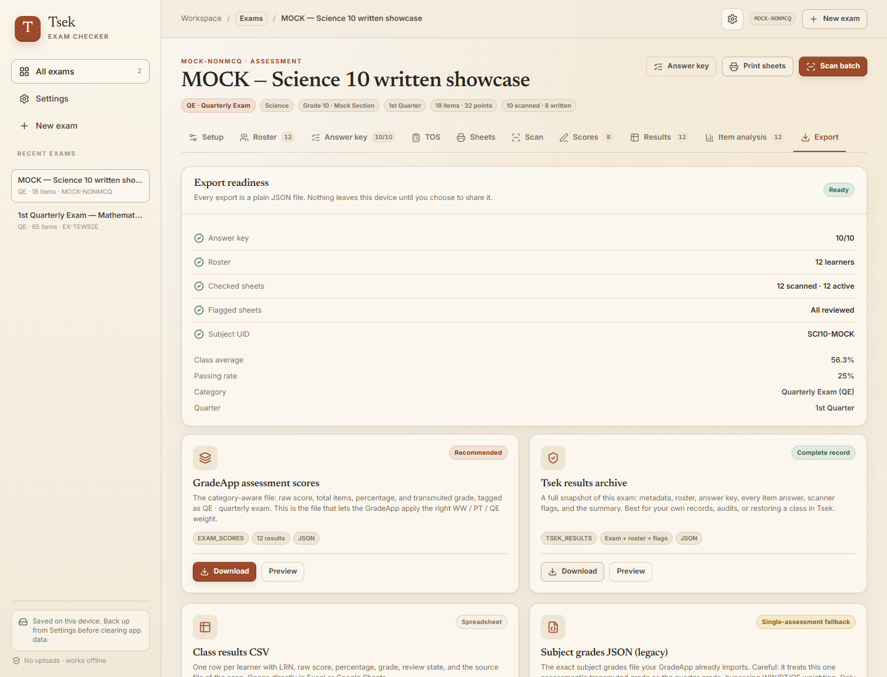
- Open Export. Confirm the readiness checklist: key complete, roster present, sheets checked, flags reviewed, Subject UID set.
- Choose GradeApp assessment scores. This is the recommended file: it carries the raw score, total items, percentage, and transmuted grade tagged as WW, PT, or QE, so the GradeApp applies the right weight.
- Choose Tsek results archive for a complete snapshot: metadata, roster, key, every item answer, flags, and summary. This is the file that restores a class inside Tsek.
- Choose Class results CSV for a spreadsheet with one row per learner.
- Choose Subject grades JSON (legacy) only when this one assessment really is the whole quarter grade. Tsek warns explicitly because the GradeApp treats this file as a complete quarter record.
- Use Preview before downloading anything you are unsure about, then Download.
%APPDATA%\ph.zxtechlabs.tsek\, which survives a cache clear but not a deleted profile — keep a backup outside the machine either way.
Labels and numbers
| Label | What it means |
|---|---|
| Analyzed takers | Complete papers used in this scope. Incomplete papers are left out. |
| Average difficulty | Mean of the per-item difficulty values. Higher means easier; it is not the class average score when items carry different points. |
| Average discrimination | How well items separate stronger from weaker learners. MCQ uses high-group minus low-group; written items use corrected item–total correlation. |
| KR-20 / KR-21 | Reliability for right/wrong items. KR-21 assumes equal item difficulty, so it is usually lower. |
| Cronbach's alpha | Reliability across all scored rows, including written partial credit rescaled to each item's points. |
| Mean score | The class's average total in this scope, with standard deviation. |
| Points earned | Class total divided by points possible. With unequal item points this differs from average difficulty. |
| Group N | Top and bottom group size. Up to 30 takers, Tsek splits the class in half; above 30, it uses 27%. |
| Status ok / review | “ok” means the sheet is matched and clean; “review” means a mark was ambiguous and needs a human decision. |
| Incomplete | A paper is missing scanned answers or at least one written score. |
| — (dash) | Not computable yet. The reason is written next to it; a dash is never a zero. |
Troubleshooting
| What you see | What to do |
|---|---|
| A sheet is not recognised, or its LRN is missing. | The QR is cropped, covered, or printed too small. Reprint at 100% / actual size on plain paper; keep the top-right area clear. |
| A paper is matched to the wrong learner. | Two sheets were mixed up, or a hand-written LRN was used with the QR off. Reprint that learner's sheet; the QR is the identity. |
| Items are flagged for review. | Open the sheet in Results and correct the affected answers. Faint pencil, erasures, and double shading are the usual causes; darker marks scan cleanly. |
| The analysis view is empty. | The scope has no items: no scanned part for MCQ, no written part for Non-MCQ. The card explains this and offers the next step. Use Overall for a test that only has one kind of item. |
| Reliability or discrimination shows a dash. | Not enough rows or no right/wrong items. Alpha needs two scored written rows; KR-20 needs scanned items. The note under the number states which. |
| No recommendation is given for an item. | Difficulty or discrimination is still missing, so no rule can be applied. The panel says so instead of guessing. |
| A score looks wrong after editing the key. | Tsek re-scores saved scans against the current key. Restore the correct key, or check the written-versus-scanned split in Results. |
| The grade looks lower than expected. | Check the transmutation table in Setup and the passing percentage. Both change the reported grade and passing count. |
| The printer drops faint grid lines. | Print at 100%, turn off toner-saver or draft mode, and use plain white paper. Heavy strokes are already in the sheet design; scaling is what erases them. |
| Windows says “Windows protected your PC”. | The build is unsigned. Choose More info → Run anyway. Code signing is not set up yet. |
Where your data lives
Tsek runs offline. Knowing where the files are is the whole backup strategy.
| Thing | Where it is |
|---|---|
| Windows workspace | %APPDATA%\ph.zxtechlabs.tsek\workspace.json |
| Automatic snapshots | …\ph.zxtechlabs.tsek\snapshots\ — the last seven states |
| Browser workspace | Local storage key srphs-tsek:v1 in the browser profile |
| Workspace backup | A JSON file saved from Settings; restores every exam, learner, and result |
| Sheet PDFs | Downloads folder, or wherever the Windows save dialog points |
| Exports | GradeApp scores, Tsek archive, class CSV, legacy subject grades |
To move from the browser to the desktop app: download a workspace backup in the browser, open the desktop app, and restore that file. Scans, scores, keys, and rosters move with it.
Back to top